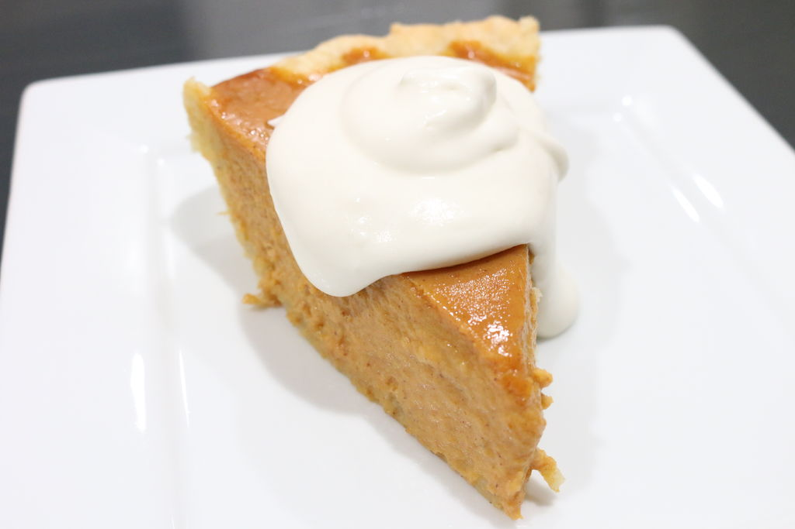
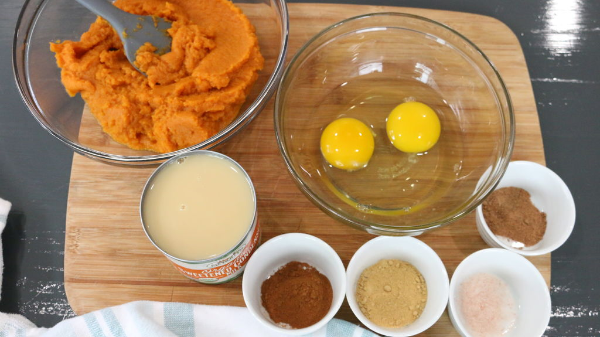
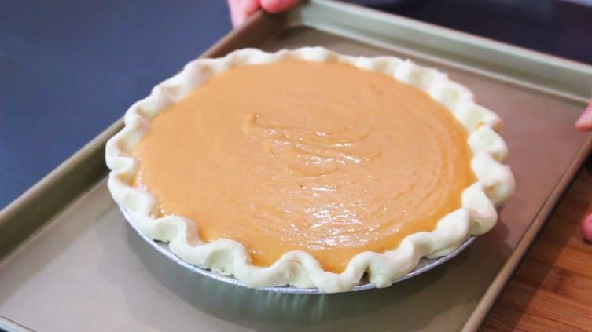

<!DOCTYPE html>
<html>
  <head>

    <!-- Define the character set used: -->
    <meta charset="UTF-8">

    <!-- Provide a description of your page: -->
    <meta name="description" content="A short description...">

    <!-- Provide the author information for the page: -->
    <meta name="author" content="Levi Goddard">

    <!-- Other meta elements -->
    <meta name="viewport" content="width=device-width, initial-scale=1.0">

    <title>The Site to rule them all<title>

    <style>
    body {
      background-color: powderblue;
      text-align: center;
          }
          .container {
            background-color: lightgrey;
            width: 900px;
            margin: auto;
            padding: 30px;
            border: 1px solid black;
          }
          .about p, pre {
            font-size: small;
            font-family: pink;
          }
          .contact {
            background-color: lightblue;
          }
          </style>

  </head>

  <body>

    <div id= "Discription" class="container">
      
      <p><h1>Pumpkin Pie</h1></p>
      <p>This is a tutorial on making pie for this season</p>
    </div>

    <div id= "Materials" class="container">
      
      <p><h2>Materials</h2></p>
      <pre>
        1 (15 oz) can of pure pumkin puree
        1 (14 oz) sweetened condensed milk
        2 eggs
        1 t ground cinnamon
        1/2 ground ginger
        1/2 nutmeg
        1/2 t salt
        1 (9-inch) pie crust
      </div>

      <div id= "Directions" class="container">
        
        <p><h3>Directions</h3></p>
        <pre>
          <h1>Step 1:</h1> In a large bowl, add the pumpkin puree,
          sweetened condensed milk, eggs and all the spices and salt. Also preheat
          oven to 425F

          <h1>Step 2:</h1> Whisk until everything is smooth and a lighter color

          <h1>Step 3:</h1> Pour filing into crust after placing crust on a cookie
          Sheet. Make sure crust is secure in a pie pan.

          <h1>Step 4:</h1> Bake for 15 minutes and reduce temperature to 350F after.
          Continue bakinf for 35-45 minutes till the filling is a golden brown.

          <h1>Step 5:</h1> Let it cool and enjoy.
        </div>


        
